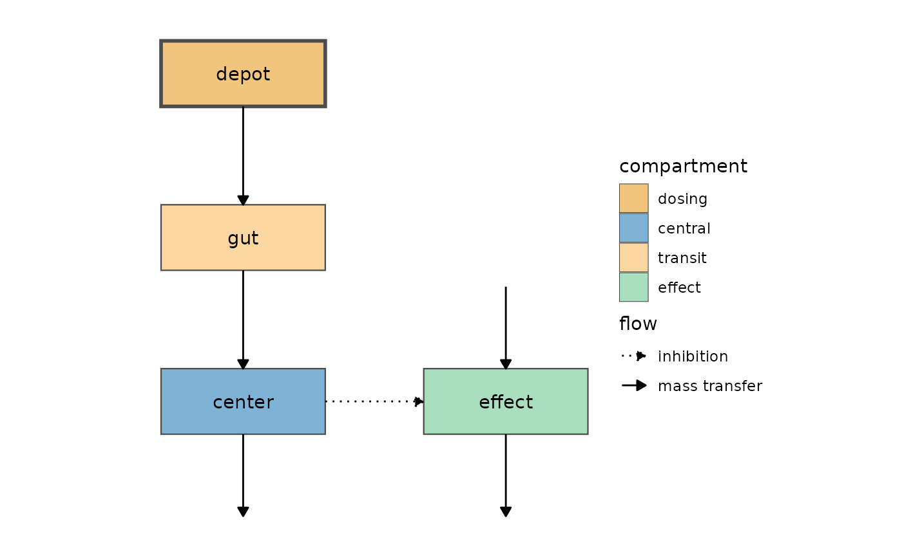

Draws a compartment diagram of a model from its differential equations
(see modelGraph() for how the equations are interpreted).
Usage
modelDiagram(
object,
dosing = NULL,
data = NULL,
engine = getOption("nlmixr2plot.diagram.engine"),
labels = FALSE,
...
)
# S3 method for class 'nlmixr2ModelGraph'
plot(x, ..., engine = getOption("nlmixr2plot.diagram.engine"), labels = FALSE)
# S3 method for class 'rxUi'
plot(
x,
...,
dosing = NULL,
data = NULL,
engine = getOption("nlmixr2plot.diagram.engine"),
labels = FALSE
)
# S3 method for class 'rxode2'
plot(
x,
...,
dosing = NULL,
data = NULL,
engine = getOption("nlmixr2plot.diagram.engine"),
labels = FALSE
)Arguments
- object
model to diagram (see
modelGraph()) or anlmixr2ModelGraphobject.- dosing
optional character vector naming the dosing compartments. When
NULLthe dosing compartments are detected from the dosing records indata(a dataset without dose records has no dosing compartment); when there is no data, or it has noevid/amtcolumns, the first compartment (the defaultrxode2dosing compartment) is used.- data
optional dataset used to detect the dosing compartments (from the dosing records'
cmt). For fitted models this defaults to the data the model was fit with.- engine
drawing engine:
"DiagrammeR"(a Graphviz htmlwidget from the 'DiagrammeR' package),"ggplot2"(aggplotobject) or"dot"(the Graphviz DOT source as a character string, to customize or render elsewhere). The default is"DiagrammeR"when that package is installed and"ggplot2"otherwise; it may be changed withoptions(nlmixr2plot.diagram.engine = ...).- labels
logical; when
TRUElabel the arrows with the model terms.- ...
ignored.
- x
a
nlmixr2ModelGraphobject, anrxode2user interface (rxUi) object or a compiledrxode2model
Details
The layout follows common pharmacometric conventions: dosing and absorption/transit compartments are above the compartment they feed; the central compartment is in the middle with the compartments it exchanges mass with (peripheral compartments) to its left; unidirectional transfer (e.g. to a metabolite) and eliminations go below; compartments that interact with the model without mass transfer (e.g. effect compartments or pharmacodynamic models) go to the right, with their own inputs above, outputs below and exchange compartments further right.
Mass transfer is drawn with solid arrows; interactions without mass
transfer are dashed (with a "tee" arrow head for inhibition and a "dot"
arrow head when the direction is undetermined with DiagrammeR; dotted
for inhibition and dot-dashed when undetermined with ggplot2).
plot() of an rxode2 user interface (rxUi) object, like
rxode2::rxode2(modelFunction), or of a compiled rxode2 model draws
its model diagram, so plot(rxode2(model)) is the same as
modelDiagram(model). (A fitted nlmixr2 model keeps its
goodness-of-fit plot(); use modelDiagram(fit) for its diagram.)
See also
Other model diagrams:
modelGraph()
Examples
# \donttest{
pk.turnover.emax <- function() {
ini({
tktr <- log(1)
tka <- log(1)
tcl <- log(0.1)
tv <- log(10)
poplogit <- 2
tec50 <- log(0.5)
tkout <- log(0.05)
te0 <- log(100)
prop.err <- 0.1
pkadd.err <- 0.1
pdadd.err <- 10
})
model({
ktr <- exp(tktr)
ka <- exp(tka)
cl <- exp(tcl)
v <- exp(tv)
emax <- expit(poplogit)
ec50 <- exp(tec50)
kout <- exp(tkout)
e0 <- exp(te0)
DCP <- center / v
PD <- 1 - emax * DCP / (ec50 + DCP)
effect(0) <- e0
kin <- e0 * kout
d/dt(depot) <- -ktr * depot
d/dt(gut) <- ktr * depot - ka * gut
d/dt(center) <- ka * gut - cl / v * center
d/dt(effect) <- kin * PD - kout * effect
cp <- center / v
cp ~ prop(prop.err) + add(pkadd.err)
effect ~ add(pdadd.err)
})
}
modelDiagram(pk.turnover.emax, engine = "ggplot2")
#>
#>
#> ℹ parameter labels from comments are typically ignored in non-interactive mode
#> ℹ Need to run with the source intact to parse comments

if (requireNamespace("DiagrammeR", quietly = TRUE)) {
modelDiagram(pk.turnover.emax, engine = "DiagrammeR")
}
#>
#>
#> ℹ parameter labels from comments are typically ignored in non-interactive mode
#> ℹ Need to run with the source intact to parse comments
# }